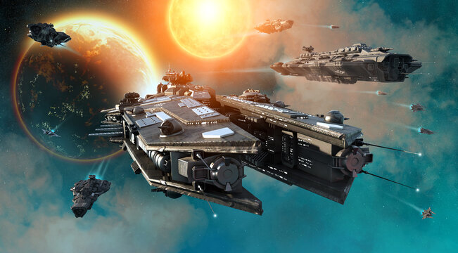

Science fiction explores ideas involving science, technology, space, the future, and possible changes to humanity.

Space opera focuses on large-scale adventures, space travel, alien civilizations, and conflicts between powerful forces.
Cyberpunk often combines advanced technology with large cities, corporations, and difficult social conditions.
Dystopian stories explore societies where people live under oppressive governments or difficult social systems.